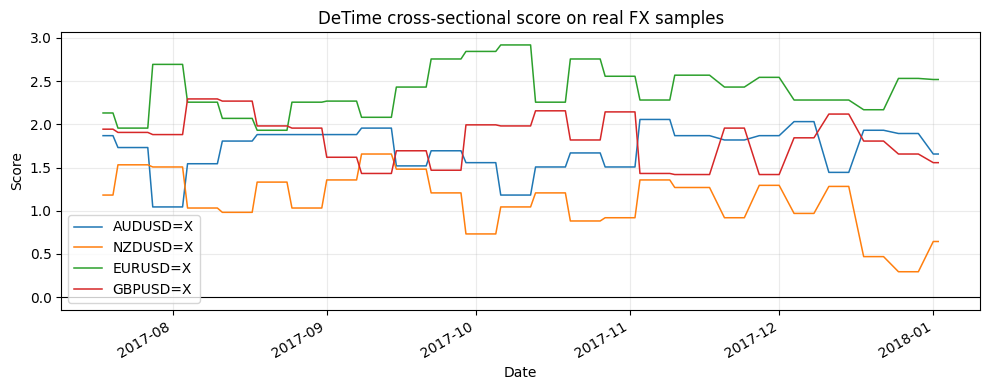
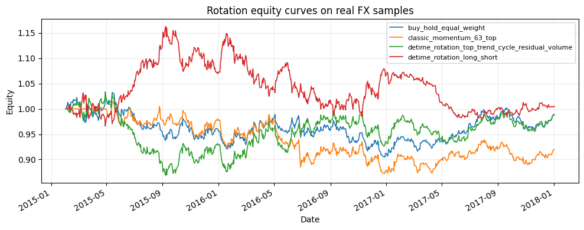

Tutorial 06 - Cross-sectional rotation and portfolio construction
Executed tutorial notebook. This page is generated from
examples/notebooks/quant_trading/06_cross_sectional_rotation_portfolio.ipynb and includes markdown cells, code cells, stdout, tables, and captured figures from the committed notebook.
Tutorial Navigation
| Track | Tutorial notebook |
|---|---|
| Roadmap | Tutorial 00 - Roadmap |
| Strategy Lab | 01 Trend-Following Lab |
| Tutorial Sequence | 01 Real Market Data and Feature Factory |
| Tutorial Sequence | 02 Decomposition-aware MA and MACD |
| Strategy Lab | 02 Oscillation-Reversion Lab |
| Strategy Expansion | 03 Method-Specific Variants |
| Tutorial Sequence | 03 Residual Mean Reversion |
| Strategy Expansion | 04 Component Pair Trading |
| Tutorial Sequence | 04 Donchian Breakout |
| Tutorial Sequence | 05 Pair-Spread Stat-Arb |
| Tutorial Sequence | 06 Cross-Sectional Rotation |
| Native SSA Replay | 07 Native SSA High-Return / Low-Drawdown |
Executed Notebook
This notebook turns DeTime features into a portfolio ranking language: trend decides direction, cycle adjusts timing, residual controls overextension and volume/reconstruction features control reliability.
In [1]
import matplotlib.pyplot as plt
import pandas as pd
from quant_trading.data import load_bundled_real_ohlcv_panel, ohlcv_audit_report
from quant_trading.features import walkforward_decompose_ohlcv
from quant_trading.decomposition_features import feature_coverage_report, build_feature_table
from quant_trading.strategy_baselines import buy_and_hold_weights
from quant_trading.strategy_rotation import (
classic_momentum_rotation_weights, detime_cross_sectional_score,
detime_long_short_rotation_weights, detime_rotation_weights,
rotation_diagnostic_table, volume_availability,
)
from quant_trading.validation import compare_weight_strategies, turnover_report
1. Load real offline market data
In [2]
tickers = ["AUDUSD=X", "NZDUSD=X", "EURUSD=X", "GBPUSD=X"]
ohlcv = load_bundled_real_ohlcv_panel(tickers, min_observations=120)
ohlcv = {field: table.tail(760).copy() for field, table in ohlcv.items()}
prices = ohlcv["Close"]
volumes = ohlcv.get("Volume")
print("volume_available:", volume_availability(volumes))
ohlcv_audit_report(ohlcv)
stdout
volume_available: False
text/html
| ticker | first_timestamp | last_timestamp | observations | close_missing_ratio | volume_missing_ratio | zero_volume_ratio | min_close | max_close | median_volume | |
|---|---|---|---|---|---|---|---|---|---|---|
| 0 | AUDUSD=X | 2015-02-02 | 2018-01-02 | 760 | 0.0 | 0.0 | 1.0 | 0.686106 | 0.811293 | 0.0 |
| 1 | NZDUSD=X | 2015-02-02 | 2018-01-02 | 760 | 0.0 | 0.0 | 1.0 | 0.626684 | 0.772380 | 0.0 |
| 2 | EURUSD=X | 2015-02-02 | 2018-01-02 | 760 | 0.0 | 0.0 | 1.0 | 1.039047 | 1.202906 | 0.0 |
| 3 | GBPUSD=X | 2015-02-02 | 2018-01-02 | 760 | 0.0 | 0.0 | 1.0 | 1.203935 | 1.588512 | 0.0 |
2. Build walk-forward asset features
In [3]
features = walkforward_decompose_ohlcv(
ohlcv,
method="STL",
period="auto",
period_candidates=(63, 126, 252),
train_window=504,
step=5,
z_window=63,
)
feature_coverage_report(features).query("feature in ['trend_slope', 'trend_strength', 'cycle_slope', 'residual_z', 'residual_abs_z', 'volume_participation']").head(18)
text/html
| feature | asset | observations | non_null | coverage | first_valid | last_valid | |
|---|---|---|---|---|---|---|---|
| 12 | trend_slope | AUDUSD=X | 760 | 257 | 0.338158 | 2017-01-05 | 2018-01-02 |
| 13 | trend_slope | NZDUSD=X | 760 | 257 | 0.338158 | 2017-01-05 | 2018-01-02 |
| 14 | trend_slope | EURUSD=X | 760 | 257 | 0.338158 | 2017-01-05 | 2018-01-02 |
| 15 | trend_slope | GBPUSD=X | 760 | 257 | 0.338158 | 2017-01-05 | 2018-01-02 |
| 20 | trend_strength | AUDUSD=X | 760 | 257 | 0.338158 | 2017-01-05 | 2018-01-02 |
| 21 | trend_strength | NZDUSD=X | 760 | 257 | 0.338158 | 2017-01-05 | 2018-01-02 |
| 22 | trend_strength | EURUSD=X | 760 | 257 | 0.338158 | 2017-01-05 | 2018-01-02 |
| 23 | trend_strength | GBPUSD=X | 760 | 257 | 0.338158 | 2017-01-05 | 2018-01-02 |
| 32 | cycle_slope | AUDUSD=X | 760 | 257 | 0.338158 | 2017-01-05 | 2018-01-02 |
| 33 | cycle_slope | NZDUSD=X | 760 | 257 | 0.338158 | 2017-01-05 | 2018-01-02 |
| 34 | cycle_slope | EURUSD=X | 760 | 257 | 0.338158 | 2017-01-05 | 2018-01-02 |
| 35 | cycle_slope | GBPUSD=X | 760 | 257 | 0.338158 | 2017-01-05 | 2018-01-02 |
| 48 | residual_z | AUDUSD=X | 760 | 257 | 0.338158 | 2017-01-05 | 2018-01-02 |
| 49 | residual_z | NZDUSD=X | 760 | 257 | 0.338158 | 2017-01-05 | 2018-01-02 |
| 50 | residual_z | EURUSD=X | 760 | 257 | 0.338158 | 2017-01-05 | 2018-01-02 |
| 51 | residual_z | GBPUSD=X | 760 | 257 | 0.338158 | 2017-01-05 | 2018-01-02 |
| 52 | residual_abs_z | AUDUSD=X | 760 | 257 | 0.338158 | 2017-01-05 | 2018-01-02 |
| 53 | residual_abs_z | NZDUSD=X | 760 | 257 | 0.338158 | 2017-01-05 | 2018-01-02 |
In [4]
build_feature_table(prices, features).tail(3).iloc[:, :12].round(4)
text/html
| component_stability | cycle | cycle_amplitude | ||||||||||
|---|---|---|---|---|---|---|---|---|---|---|---|---|
| AUDUSD=X | EURUSD=X | GBPUSD=X | NZDUSD=X | AUDUSD=X | EURUSD=X | GBPUSD=X | NZDUSD=X | AUDUSD=X | EURUSD=X | GBPUSD=X | NZDUSD=X | |
| Date | ||||||||||||
| 2017-12-29 | 0.9957 | 0.9939 | 0.9935 | 0.9935 | -0.0227 | -0.0174 | 0.0056 | -0.0092 | 0.0306 | 0.0198 | 0.0103 | 0.0311 |
| 2018-01-01 | 0.9959 | 0.9943 | 0.9932 | 0.9941 | -0.0147 | -0.0086 | 0.0114 | 0.0075 | 0.0306 | 0.0187 | 0.0100 | 0.0304 |
| 2018-01-02 | 0.9959 | 0.9943 | 0.9932 | 0.9941 | -0.0147 | -0.0086 | 0.0114 | 0.0075 | 0.0306 | 0.0187 | 0.0100 | 0.0304 |
3. Inspect the DeTime rotation score
In [5]
score = detime_cross_sectional_score(prices, features)
score.tail(5).round(3)
text/html
| AUDUSD=X | NZDUSD=X | EURUSD=X | GBPUSD=X | |
|---|---|---|---|---|
| Date | ||||
| 2017-12-27 | 1.894 | 0.294 | 2.531 | 1.656 |
| 2017-12-28 | 1.894 | 0.294 | 2.531 | 1.656 |
| 2017-12-29 | 1.894 | 0.294 | 2.531 | 1.656 |
| 2018-01-01 | 1.656 | 0.644 | 2.519 | 1.556 |
| 2018-01-02 | 1.656 | 0.644 | 2.519 | 1.556 |
In [6]
fig, ax = plt.subplots(figsize=(10, 4))
score.tail(120).plot(ax=ax, linewidth=1.1)
ax.axhline(0, color="black", linewidth=0.8)
ax.set_title("DeTime cross-sectional score on real FX samples")
ax.set_ylabel("Score")
ax.grid(True, alpha=0.25)
plt.tight_layout()
plt.show()
image/png

In [7]
rotation_diagnostic_table(prices, features, tail=2).round(4)
text/html
| date | asset | score | trend_strength | cycle_slope | residual_z | volume_participation | |
|---|---|---|---|---|---|---|---|
| 0 | 2018-01-01 | EURUSD=X | 2.5188 | 0.1228 | 0.0016 | -0.4600 | 1.25 |
| 1 | 2018-01-01 | AUDUSD=X | 1.6563 | 0.0496 | 0.0010 | 0.2019 | 1.25 |
| 2 | 2018-01-01 | GBPUSD=X | 1.5562 | 0.0393 | 0.0011 | 0.1007 | 1.25 |
| 3 | 2018-01-01 | NZDUSD=X | 0.6438 | -0.0190 | 0.0036 | -0.8123 | 1.25 |
| 4 | 2018-01-02 | EURUSD=X | 2.5188 | 0.1228 | 0.0016 | -0.4600 | 1.25 |
| 5 | 2018-01-02 | AUDUSD=X | 1.6563 | 0.0496 | 0.0010 | 0.2019 | 1.25 |
| 6 | 2018-01-02 | GBPUSD=X | 1.5562 | 0.0393 | 0.0011 | 0.1007 | 1.25 |
| 7 | 2018-01-02 | NZDUSD=X | 0.6438 | -0.0190 | 0.0036 | -0.8123 | 1.25 |
4. Backtest a compact rotation suite
In [8]
strategies = {
"buy_hold_equal_weight": buy_and_hold_weights(prices),
"classic_momentum_63_top": classic_momentum_rotation_weights(prices, lookback=63, top_n=2, rebalance_freq="W-FRI", vol_target=None),
"detime_rotation_top_trend_cycle_residual_volume": detime_rotation_weights(prices, features, top_n=2, rebalance_freq="W-FRI", vol_target=None),
"detime_rotation_long_short": detime_long_short_rotation_weights(prices, features, top_n=2, bottom_n=2),
}
comparison, results = compare_weight_strategies(prices, strategies, fee_bps=1.0, slippage_bps=2.0)
comparison[["total_return", "sharpe", "max_drawdown", "average_turnover"]].round(4)
text/html
| total_return | sharpe | max_drawdown | average_turnover | |
|---|---|---|---|---|
| strategy | ||||
| detime_rotation_long_short | 0.0052 | 0.0686 | -0.1563 | 0.0572 |
| detime_rotation_top_trend_cycle_residual_volume | -0.0112 | 0.0095 | -0.1596 | 0.0289 |
| buy_hold_equal_weight | -0.0115 | -0.0085 | -0.1234 | 0.0000 |
| classic_momentum_63_top | -0.0799 | -0.2850 | -0.1403 | 0.0461 |
In [9]
fig, ax = plt.subplots(figsize=(10, 4))
for name, result in results.items():
result.equity.plot(ax=ax, linewidth=1.2, label=name)
ax.set_title("Rotation equity curves on real FX samples")
ax.set_ylabel("Equity")
ax.legend(loc="best", fontsize=8)
ax.grid(True, alpha=0.25)
plt.tight_layout()
plt.show()
image/png

In [10]
turnover_report(strategies).round(4)
text/html
| average_turnover | median_turnover | max_turnover | average_gross_exposure | |
|---|---|---|---|---|
| strategy | ||||
| buy_hold_equal_weight | 0.0000 | 0.0000 | 0.0 | 1.0000 |
| classic_momentum_63_top | 0.0461 | 0.0000 | 2.0 | 0.9158 |
| detime_rotation_top_trend_cycle_residual_volume | 0.0289 | 0.0000 | 2.0 | 0.9947 |
| detime_rotation_long_short | 0.0572 | 0.0034 | 3.0 | 1.2333 |
5. Live-data extension
Run run_column_06_cross_sectional_rotation.py without --use-bundled-sample to use sector ETFs and real equity/ETF volume. In the bundled FX sample, raw volume is unavailable, so volume is neutral rather than invented.